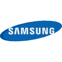
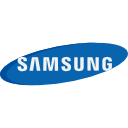
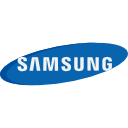
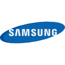

Somos especialistas

 


 

Hartech é uma empresa de suporte técnico criada em 2022 para solucionar os problemas que a sociedade enfrenta em seus computadores. Segundo um levantamento realizado pelo GetNinjas, só em junho de 2020, a procura pela contratação desses serviços cresceu 172% em todo o país, se comparado ao mesmo período do ano 2019. Dado a isso, decidimos adaptar a Hartech com a finalidade de suprir as necessidades da sociedade.
Hartech foi criada para dar suporte às pessoas que estão com problema em seus computadores por um preço que todos possam pagar. A Hartech tem como objetivo expandir seu negócio em outras regiões para oferecer seus serviços e satisfazer os clientes com a maior qualidade possível. Temos como finalidade atuar na área de manutenção de computadores, focando deixar a vida do cliente mais fácil, pois temos a ideia de atender as necessidades de nossos clientes da melhor forma possível.